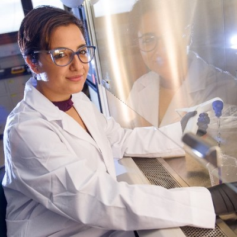

Elizabeth Boudaher
PhD Candidate | Medical & Health Science | WA, Australia

Research
I’m investigating Clostridioides difficile through a One Health lens. My research explores the ecology and epidemiology of C. difficile across dairy systems, examining environmental reservoirs and potential transmission pathways extending beyond the farm and into the wider community, with particular interest in the role of dairy calves.